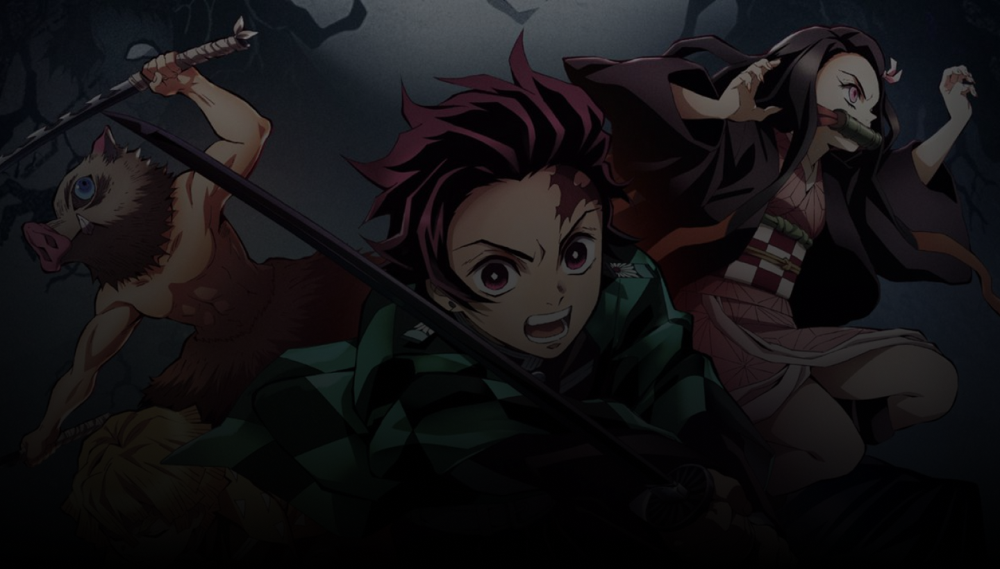
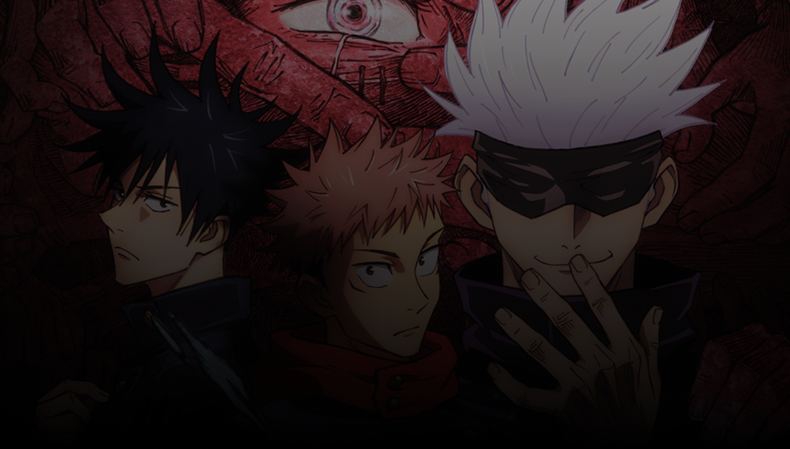
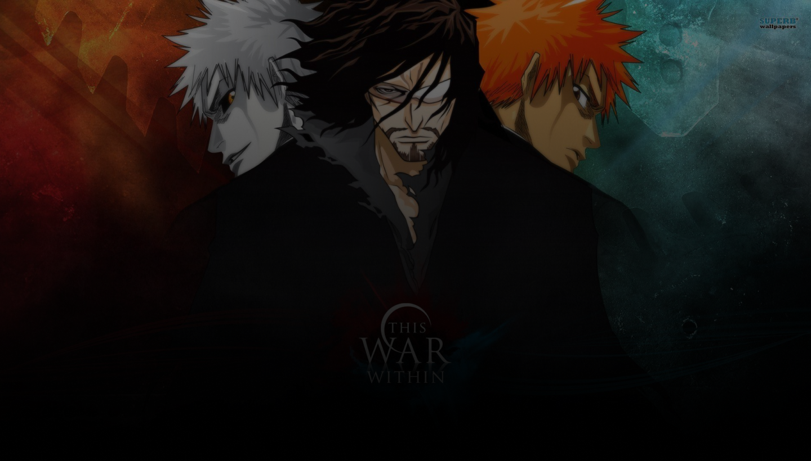
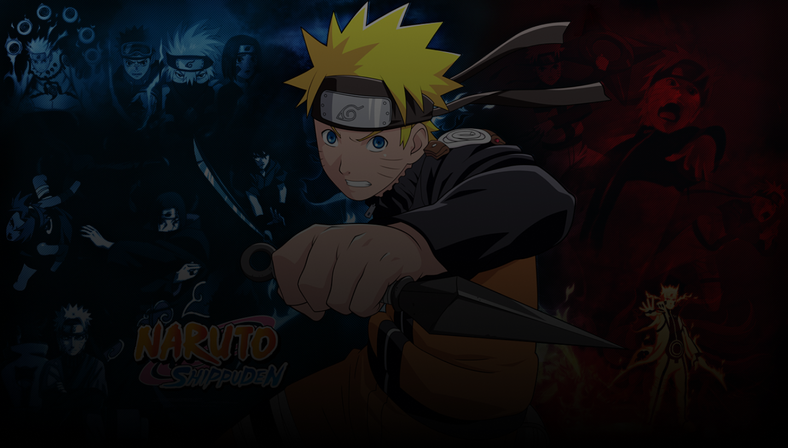

In order to ease tensions between Westalis and Ostania, Westalis Intelligence (WISE) assigns agent "Twilight" to form a family in Ostania in order to get close to Donovan Desmond, leader of Ostania's National Unity Party. To do
this, he will need to enroll his "child" into Eden Academy, where he can safely approach Donovan at an event. Twilight

#2 Trending
Kimetsu no Yaiba
ActionShounen
Tanjiro Kamado, joins Inosuke Hashibira, a boy who was raised by a boar wearing the head of a boar, and Zenitsu Agatsuma, a scared boy who unleashes his true power when he sleeps, aboard the Infinity Train on a new mission with
a Pillar of Fire, Kyojuro Rengoku , To defeat the demons that have been torturing people and kill the demon slayers that oppose him!

#3 Trending
Jujustu Kaisen
ActionComedy
Yuuji Itadori, a high school student who turns out to have extraordinary physical strength. At first, he lived his days as an ordinary high school boy, but then his life was rewarded when he had to help his friends who were
facing danger because of a curse.

#4 Trending
Bleach
ActionAdventureFantasy
Ichigo Kurosaki is an ordinary high schooler—until his family is attacked by a Hollow, a corrupt spirit that seeks to devour human souls. It is then that he meets a Soul Reaper named Rukia Kuchiki, who gets injured while
protecting Ichigo's family from the assailant. To save his family, Ichigo accepts Rukia's offer of taking her powers and becomes a Soul Reaper as a result.

#5 Trending
Naruto Shippuden
ActionShounenAdventure
Naruto Uzumaki left Konohagakure, the Hidden Leaf Village, for intense training following events which fueled his desire to be stronger. Now Akatsuki, the mysterious organization of elite rogue ninja, is closing in on their
grand plan which may threaten the safety of the entire shinobi world.
Search Anime
Search anime, get the latest episode and find more about your favorite anime